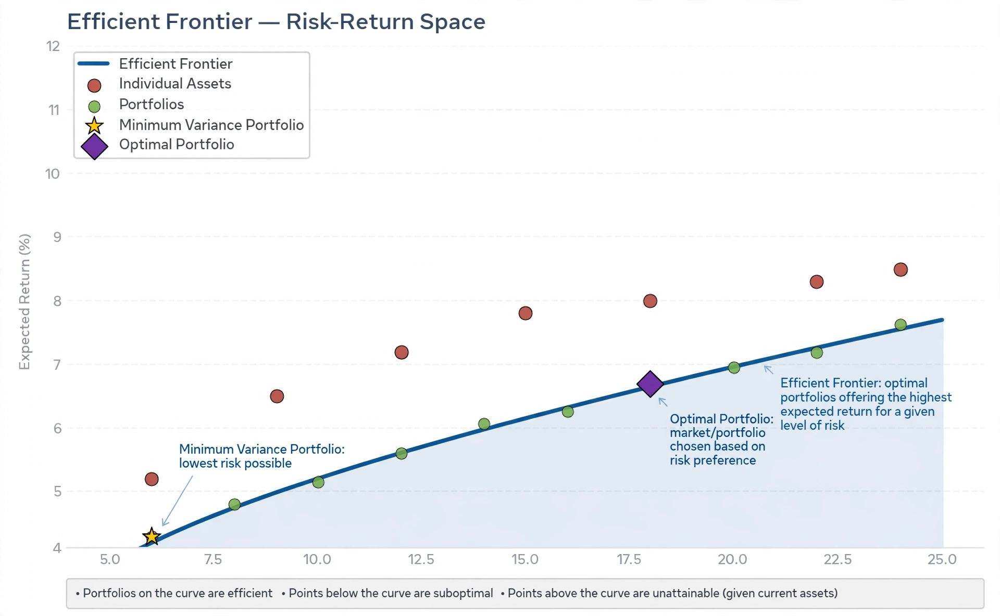

| Modern portfolio theory | |
|---|---|
 | |
| Originator | Harry Markowitz (1952) |
| Key concepts | Efficient frontier, diversification, expected return, variance, Sharpe ratio |
| Extensions | Capital asset pricing model; post-modern portfolio theory |
Modern portfolio theory (MPT), or mean–variance analysis, is a mathematical framework for assembling a portfolio of assets such that the expected return is maximised for a given level of risk. It was pioneered by Harry Markowitz in his 1952 paper "Portfolio Selection" and his 1959 book, work for which he shared the 1990 Nobel Memorial Prize in Economic Sciences.
MPT models an asset's return as a random variable and a portfolio's return as a weighted sum of its assets' returns. Risk is measured by the variance (or standard deviation) of returns. Because asset returns are imperfectly correlated, diversification reduces portfolio variance without necessarily reducing expected return. For each level of risk there is an optimal combination; the set of optimal portfolios forms the efficient frontier. A rational, risk-averse investor will choose a portfolio on this frontier rather than any below it.
Combining the efficient frontier with a risk-free asset yields the capital market line and the concept of the tangency (market) portfolio, underpinning the capital asset pricing model (CAPM) developed by Sharpe, Lintner, and Mossin. The Sharpe ratio measures return per unit of risk. James Tobin's separation theorem distinguishes the choice of the optimal risky portfolio from the investor's allocation between it and the risk-free asset.
Critics note that MPT assumes normally distributed returns, rational investors, frictionless markets, and stable correlations — all of which fail in practice, especially during crises when correlations rise. Alternatives including post-modern portfolio theory (which uses downside risk), behavioural finance, and risk-parity approaches attempt to address these shortcomings, yet MPT remains foundational to professional investment management.
See also: Harry Markowitz; Efficient frontier; Capital asset pricing model; Diversification (finance); Sharpe ratio.